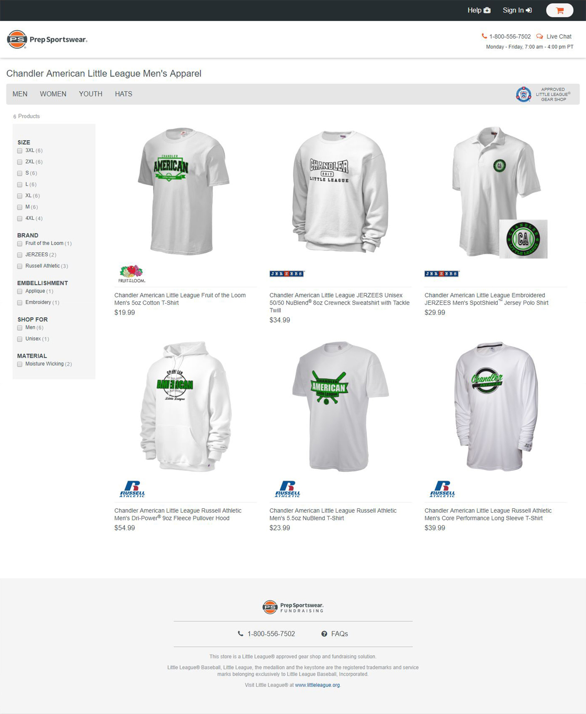
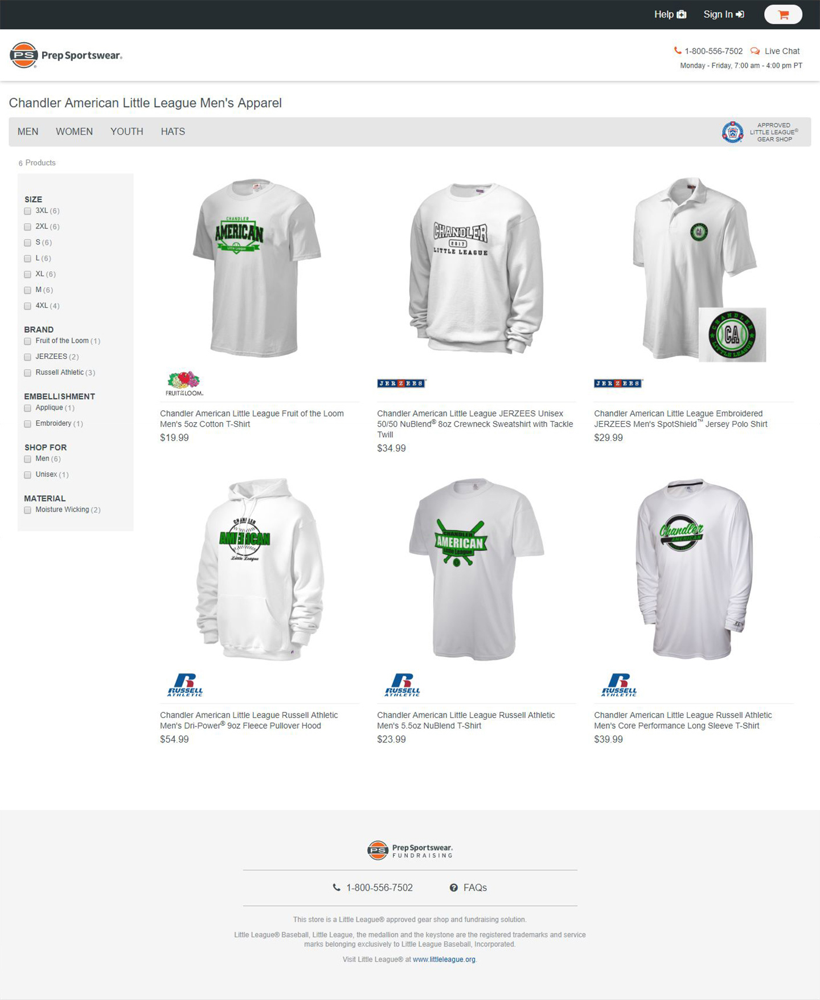
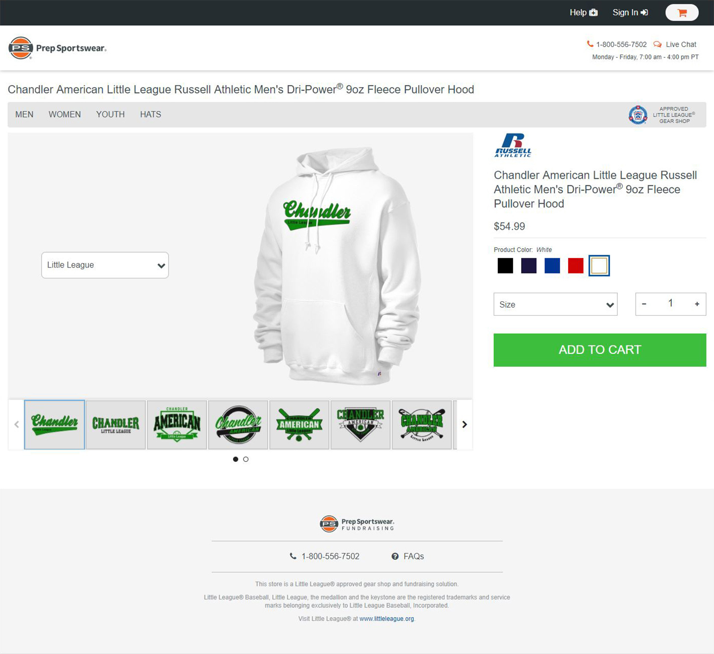

<<<<<<< HEAD
Little League / Russell Athletic
e-Commerce that gives back
Prep Sportswear formed a manufacturing partnership with Little League of America and Russell Athletic to form a centralized platform that would provide Little League fans with custom merchandise, team and league data housing, and the ability to fundraise through sales. As the current website was inundated with tech debt, we decided to use this as an opportunity to replatform and rebuild from the ground up. The old website be rolled over once the new site was built and battle tested. My role as primary front-end UI developer put me as the middle man between the design and development teams within the company.

One big challenge we tackled was the user flow of the site. We needed to remove multiple steps and improve the search functionality from the old platform, which took 4+ steps just to get to a product page, and saw considerable drop-out rates. We achieved this in 2 ways. The first was streamlining the steps to finding the users' respective team store, so they could navigate in and start shopping. So we made the landing page for the channel the team list page, with a functional meta-tag based search. The second was building the IA in such a way that we could actually have the user start "designing" the product in the product-list page. We achieved this by creating mappings within the filter functionality of that list page, so the user could choose their size, color, and product (among other filtering options) before clicking into the individual products' page, where all the user had to do was choose the design if they didn't like the default, and go to checkout.
 

We also changed the way we approached the design selection on the product list page. It was previously a scrollable tile view of 12 designs at a time, with a ton of controls and customizations the user could do, however research showed that a lot of customers were confused as to what the controls did. Some users didn't even realize you could add these customizations at all. We used color maps and wireframes to work through designing the page to feature as few controls as possible. Any field that didn't apply to the currently selected design, would not be shown.

The other half of this project was a fundraising site for the individual teams/leagues featured on the site. Users could come set up a fundraising account for their team, where they got proceeds from all sales within their teams store which could be either sent as a check or account deposit, or re-applied to future orders on the e-commerce site. I built the fundraising site using the same grid and style attributes as the e-commerce site. The reason being we wanted to create a cohesive brand that created familiarity between the sites, which were heavily Little League branded. Creating this cohesion visually put emphasis on the fact that both sites were housed under the Prep Sportswear brand or engine. We built a homepage that told the story and the features of the fundraising site, informing users of the benefits and how-to's of the site.

As the UI developer on this project, I worked very closely with the UI designer and my back-end team in figuring out branding, user paths and features. We rebuilt the filtering system to be dynamic, and allow the user to design their product essentially in the product list page. Since every product featured multiple color options, design options, sizes, etc., we wanted the user to be able to go into the shopping experience with a certain thing in mind already, and get there quickly. Creating a system that allowed you to pick color, size, and product type (and subsequent product) on the list page, made it so once the user clicked on the product in that page, they could be dropped into an immediate add-to-cart situation if the user felt satisfied with their choices.
Another major challenge on the project which played a big part was the information architecture and the creation of schema's. I served as the consultant for most of these. Some of the things we addressed were the mapping of colors, and how changing a design or product color would affect the other colors. We had to do this with both the Pantone system and our internal spot colors working together, both for Little League, and with the college and other licensed channels in mind for future migration to the new platform. The key I found was again simplicity. Dumbing the system down from its prior state which used an extremely complicated set of rules and algorithms that converted spot colors to lab, and then output to CMYK and RGB (for manufacturing and web views, respectively), improved mapping and increase design contrast, as well as removing hundreds of lines of code that could cause system errors for outlier cases.
I was partly responsible for crafting the information architecture for designs and dynamic field mapping in the designs as well. To explain further, each text field (and some graphical elements) in every design was dynamic and would display pieces of team information as selected by either the set up of the design (internally) or by the user (externally, e.g. "first baseman" or "team mom", so the user could choose their position, the year or jersey name, etc.). My role was to guide the data engineers and back-end programmers through the interactions of how these fields mapped to certain data within the teams stored data, how the user would interact with certain dynamic fields (like the one described above), and how the stored data and user-input data interacted with each other.
I also created, maintained and oversaw the brand identity and style guide. Although not actually using the atomic system for the style guide due to lack of internal partner expertise in setting up the system, I chose to build it in an atomic fashion, defining first the atom level elements like colors, fonts, iconography, then using those to define the molecules (buttons, forms, etc.), organisms, and so on.
The end result exhibited the 2 sites (e-commerce and fundraising) with matching grid systems, interactions, user flows in shared processes, etc. that created the overall branded feel. We built a simple system that separated each piece of data making an easily maintainable platform. One thing we lacked in this project due to time constraints was rounds of external user research prior to release. Instead we did all company showcases along the way, and iterated from this feedback as we went so we could continue moving forward.
=======
Little League / Russell Athletic
e-Commerce that gives back
The Gameplan:
Prep Sportswear formed a manufacturing partnership with Little League of America and Russell Athletic to form a centralized platform that would provide Little League fans with custom merchandise, team and league data housing, and the ability to fundraise through sales. This project it was decided was also the launch point for a re-platform and migration of the old website which was inundated with tech-debt and tangled data.
The Player:
My main roles in this project were to serve as the liaison between the marketing/creative team (my former team as a Visual/UX designer) and the development team, and to build out the front end of the new platforms. I also served as the main consultant on IA of color, design, and product mappings.
The Highlights:
Challenge 1 - Happy Path
We wanted to remove some steps from the old process and get the user to the cart quicker. The old process had users spending too much time searching for their store which resulted in high drop-off rates. We decided on two important means to do this. The first was combining a few of the early-step pages (which took the user through a series of funneling pages to arrive at their store) into one functional landing page which served as the navigation and took the user direct to their store.
The second was building the information architecture in such a way that we could actually have the user start "designing" the product in the product-list page. We achieved this by creating mappings within the filter functionality of that list page, so the user could choose their size, color, and product (among other filtering options) before clicking into the individual products' page, where all the user had to do from there was choose the design if they didn't like the default, and go to checkout. The size, color, and product they wanted would be carried over from their filter choices on the previous page.
...building the information architecture in such a way that we could actually have the user start 'designing' the product in the product-list page.
Challenge 2 – User Designer Functions
Another thing we changed was the way we approached the design selection on the product list page. It was previously a scrollable tile view of 12 designs at a time, with a ton of controls and customizations the user could do it, however research showed that a lot of customers were confused as to what the controls did (year, est. year, player number, player name, etc.). Some users didn't even realize you could add these customizations at all.
We used color maps, and wireframes to work through designing the page to feature as few controls as possible at a time, and would easily breakdown for mobile viewing. Any field that didn't apply to the currently selected design, would not be shown.
Challenge 3 – Branding across subdomains
The other half of this project was a fundraising site for the individual teams/leagues featured on the site. Users could come set up a fundraising account for their team, where they got proceeds from all sales within their teams’ store which could be either sent as a check or ACH deposit, or re-applied to future orders on the e-commerce site.
I built the fundraising site using the same grid and style attributes as the e-commerce site. We designed the sign-in flows to be the same, had single sign-on between the sites, etc. The reason being we wanted to create a cohesive brand that created familiarity between the sites. Fundraising which was heavily Little League branded (“Powered By” us) and geared at team management (as we were building the platform that Litte League would direct league admins to, to manage team and league data), and the e-commerce site which was Prep Sportswear with Little League affiliation.
Creating this cohesion visually put emphasis on the fact that both sites were housed under the Prep Sportswear brand/engine. We built a homepage that told the story and the features of the fundraising site, informing users of the benefits of and how to use the site.
I also created, maintained and oversaw the brand identity and style guide. We chose to build it using the atomic design methodology, defining first the atom level elements like colors, fonts, iconography, then using those to define the molecules (buttons, forms, etc.), organisms, and so on up the chain.
Challenge 4 – Schema’s on Schema’s
Another major challenge on the project which played a big part was the information architecture and the creation of schema's. I served as the data and mapping consultant for most of these. One major thing we addressed were the mapping of colors, and how changing a design or product color would affect the other colors of the whole product & design combo.
We had to do this with both the Pantone system and our internal spot colors working together, both for Little League, and with the college and other licensed channels in mind for future migration to the new platform. Scalability of course being the power variable in this equation.
The key I found was again simplicity. The old system tied Pantone colors to products, and involved a lot of confusing algorithms which translated colors from one color space to another, and had logic tied into what colors were allowed where when a certain color was selected on either the design or the product. Confusing right?! All we needed was 3 colors to play nicely together (2 color design, on a product of a chosen color).
I dumbed the system down to a simple mapping architecture, that could included the Pantone system, or any other system of spot colors. It broke every Pantone and proprietary spot color down to the 23 different colors of the Prep Sportswear rainbow (err, I mean the 23 spot colors that we used for non-licensed store branding).
From there, it was only a few lines of code that said basically if red here, not red here, and over there is acceptable if you need. Infinitely scalable yet contained. All we needed was one big data table! So, I wrote a script with our software engineer that ran through all the pantones and spot colors, and spit out mappings for web colors, print colors, lab values, you name it.
Final Score
We release the 2 sites (e-commerce and fundraising), cohesive in branding, processes, and interactions. We built a simple system that separated each piece of data, making an easily maintainable platform. One thing we lacked in this project due to time constraints was rounds of external user research prior to release. Instead we did all company-wide showcases along the way, and iterated from this feedback as we went so we could continue moving forward. Not surprisingly, the customer service team provided very valuable feedback as they were our ear to the streets.
>>>>>>> gh-pages